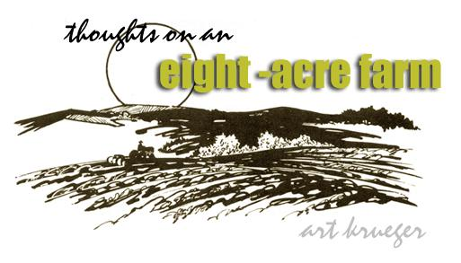

Taken from the Maine Land Advocate/$3.00 a year/P.O. Box 653, Bangor, Maine 04401.
When I first came to this land (Vermont), I thought I needed 100 acres and that I'd like to put a house right in the middle of it. The grim realities of economics, of course, dictated that I would have had to work at the yetch office job I then had for about 20 years in order to amass the capital to buy a chunk of land that size . . . to say nothing of paying the taxes on the property or financing the construction of a house.
Now when I wanted that 100 acres, I had no idea what an acre was. I thought that a family vegetable garden needed to cover at least one acre. But I know better now . . . and I know better on more than just purely economic grounds.
Back when I had my heart set on a hundred acres, I never stopped to ask myself, "A hundred acres of what? What will I do with it?" I have since lived for a time on 100 acres of scrub second growth that was mostly useless. Even getting a kitchen garden out of it was a backbreaker.
Now I live on eight acres. It is a much more reasonable piece of property for a "homestead" than the 100 acres I once thought I wanted. Eight acres is large enough for an economically viable vegetable farm . . . or at least so report travelers from the mountainous regions of Europe.
Our property has that ever-important southern exposure and deep loam (at least it's deep by New England standards). It has some scrub pine on it . . . the result of 20 years of non-use.
Eight acres, we have found, is a controllable amount of land . . . small enough to keep taxes and mortgage down to a manageable level. And an hour a day with bow saw and axe will take all that scrub pine out by 1975.
Of course the old-time farmers around here will talk about the need for a woodlot, once those pines and the scrub hardwoods on our eight acres are all culled. OK. Let's talk about it.
For a sustained yield of firewood for an average farmhouse in this area, one needs-say-20 acres to cut over. (That's onehalf cord of firewood per acre per year.) At $500 per acre, this means an investment of $10,000. Interest alone on this land-at 8%-is $800 a year. Add in $100 for taxes and we find ourselves paying $900 annually for the cutting rights to 10 cords of wood. That's $90.00 a cord for standing wood! A poor investment. There must be a better way.
So far, we've been heating our house by cutting the dead elms out of our neighbor's fence row. Blight-killed elm, despite its bad reputation, is a first-class firewood. Of course it is an exhaustible resource. In 10 years, sadly enough, there will not be many elms left. Those not burned will have rotted.
Once the elms are gone, we'll get our fuel by doing woodlot improvement on someone else's land. It doubles the ultimate yield in saw logs, you know, to cull out misshapen, crowded and otherwise undesirable hardwoods. Currently, the Vermont state forests are open to the public for this sort of cutting.
For sheer economics, one cannot beat a small piece of good land if one has only labor (and no capital to invest in machinery or livestock). An acre in onions, for example, will yield a gross profit of $4,000.
All the plowing that a shirttail-sized farm needs can be done "for hire" by a neighbor who owns a tractor. Our experience says that an acre of very heavy sod can be opened with a tractor-driven rototiller for about $80.00. Keeping it open should cost a lot less. For $20.00, the local chicken factory is willing to deliver enough manure to our farm to cover an acre.
A pickup truck is handy for hauling in mulch, hay, lime, etc. If you don't have one, however, you can always make some arrangement for delivery with an individual or company that does have a truck.
The rest is your back. A hundred or so dollars in hand tools is really the only capital expenditure you'll need to make to farm eight acres.
Compare this to the dairy farmer and his 80 cows, $200,000 tied up in equipment and hundreds of costly acres of land. The man is mortgaged to the eyeballs. He's really a very low-paid manager of a milk factory owned by the bank. Talk of labor exploitation!
To close on a very honest note, I must admit that, in my earlier unknowing craving for 100 acres, there was hidden a strong desire to hide from the world. The outrage theory of escape: If I go hide on a large piece of land the great crisis facing the rest of the people will not affect me. It's a very self-indulgent-not to say unreal-attitude.
Well, I've changed. The use of land as insulation no longer seems valid or just. Far better to unite with nearby neighbors to fight the ugly faction within and misuse of America . . . than to hide from such deterioration until it surrounds us.
|
 Taken from the Maine Land Advocate/$3.00 a year/P.O. Box 653, Bangor, Maine 04401. |
|
|